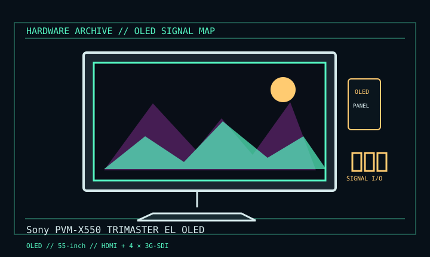

[ INDIVIDUAL COMPONENT // DISPLAYS ]
Sony PVM-X550 TRIMASTER EL OLED
55-inch professional mastering monitor, 4K OLED generation, mid-2010s. OLED

IDENTIFICATION: Verify the complete model/revision on the rear label. Specifications are tied to the cited manual/specification; variant-dependent values are qualified rather than generalized.
Specifications
| Catalog subcategory | Oled Displays |
|---|---|
| Exact product/family | Sony PVM-X550 TRIMASTER EL OLED |
| Era | 55-inch professional mastering monitor, 4K OLED generation, mid-2010s. |
| Panel / image | 55-inch TRIMASTER EL OLED; supports 3840 × 2160 and 4096 × 2160 formats up to 60p, subject to input/format. |
| Inputs | HDMI and four 3G-SDI BNC inputs; 4K SDI mapping depends on single-/quad-link format. |
| Signal | Professional video input formats and color modes; not ordinary PC DVI/DisplayPort. |
| Mechanical | Professional large-format chassis; consult exact operating instructions for AC and installation ratings. |
Revision, signal & host compatibility
Input mapping and supported HDR/color modes depend on firmware and link format. Quad-link SDI requires four synchronized feeds and prescribed mapping; HDMI 4K bandwidth depends on source/cable. Don’t assume standard PC EDID/timings.
Match source signal type, sync/timing, connector pinout, bandwidth and power path to this exact display. Physical connector fit alone does not establish electrical or timing compatibility.
Preservation & repair notes
Log operating hours, brightness, calibration and static graphics; assess OLED ageing/retention. Preserve ventilation clearance and controls. Calibration and internal service are specialist Sony procedures.
Record model suffix, serial/date label, accessories, image condition, configuration, source document and repair history. CRT high-voltage, LCD backlight and OLED panel risks require appropriate service training and the correct manual.
Manufacturer manuals & references
- Sony PVM-X550 Product BrochureManufacturer product specification: formats, panel and professional inputs.
- Sony PVM-X550 product documentationSony model-family reference.